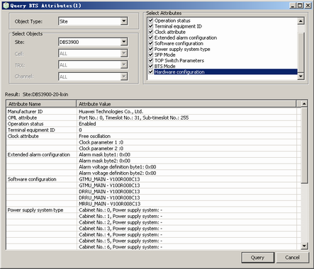

This describes how to query BTS attributes. By querying BTS attributes, you can learn the operating status and attributes of a BTS in real time and verify the information on the manufacturer, software configuration, and hardware configuration of the BTS.
Prerequisites
- The LMT runs normally.
- The communication between the LMT and the BSC is normal.
- The communication between the BSC and the BTS is normal.
Procedure
- Through GUI
- Choose .
- Set Object Type to Site and set parameters in Select Objects and Select Attributes areas. Click Query. A dialog box is displayed, as shown in Figure 1.
Figure 1 Querying the BTS attributes

- Through MML
- You can run the following commands on the LMT to querying BTS attributes.
- Run the DSP BTSATTR command to query the BTS attributes.
- Run the LST CELLSOFT command to query cell software parameters.
Copyright © Huawei Technologies Co., Ltd.